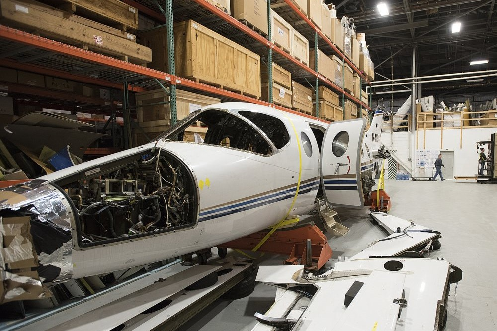
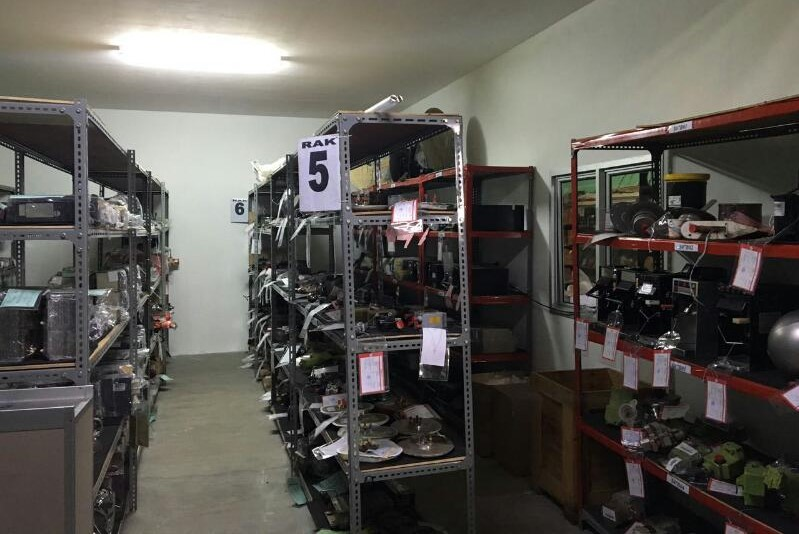

Core Services
EAS focuses on the aftermarket service with a core strategy of supplying our airline partners and other customers with their aircraft spares needs. We have completed multiple teardown projects and have in stock with us the spares on the following platforms- Twin Otter
- CASA 12
- Beechcraft B1900C &B1900D
- BAE Jetstream 41( We carry complete inventory of this model)
- Saab-340
- Dornier-228 Series
- ERJ-120/170/190
- CRJ-100/200/700
- A320 ( all variants)
- B737CL/NG
- B757-200
- A340
- ATR 42/72 ( all variants)


Non-Core Services
- Aviation Finance
- Aircraft Leasing
- Aircraft Appraisal and Records Inspection
- Aircraft Trading
- Aircraft Insurance
Our Recent Projects
Within a short period of 3 years, we take pride in ourselves to have successfully completed numerous teardown projects to support our clients with their spares needs:- 12 units of Saab-340
- 3 units of BAE Jetstream-41
- Puma Helicopters
- 6 Dornier 228-212
- Twin Otter
- B1900D & B1900C

Future Projects
We are committed to completing the following activities within next 2 years:- Expand our Current Warehouse in Kathmandu and build a hangar to support the teardown of Regional and Narrow-bodies.
- Acquire MRO approval for the certification/repair of the spares from teardown.
- Implement efficient Supply Chain Management System to provide instant support and end to end solution to clients.
- Establish warehouses at all strategic locations to support Normal and AOG requirement.
- Develop industry leading Lean Management to avoid all types of wastes to remain competitive.